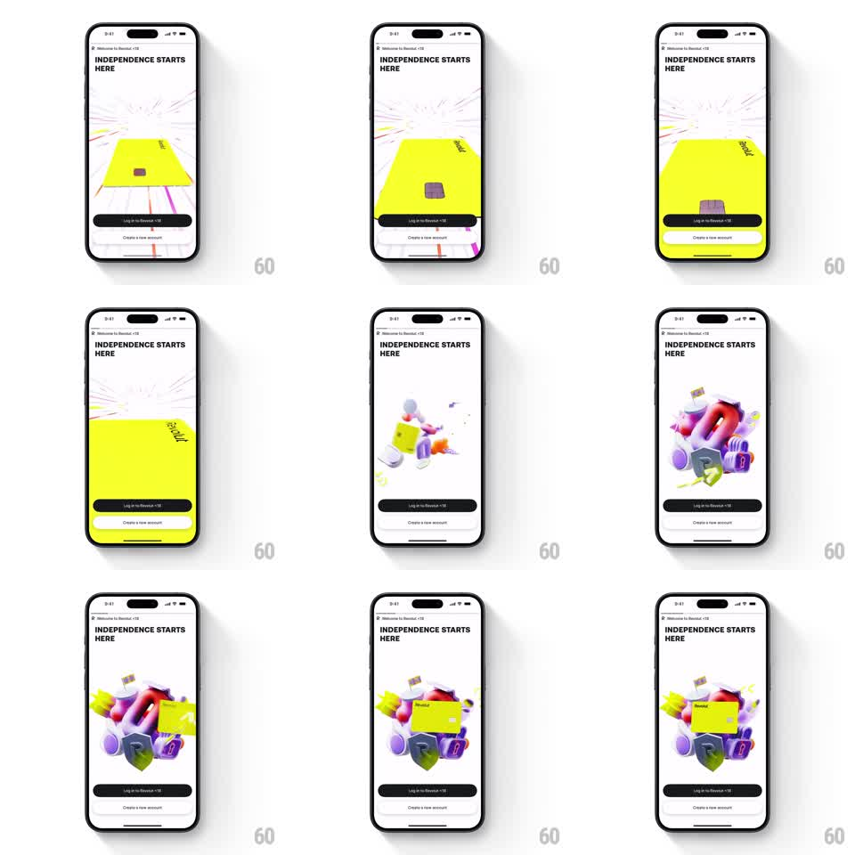

Media
Frame-by-frame

Rebuild this animation 1:1: Revolut's welcome intro - a giant yellow card that fills the screen zooms back and shrinks into a floating cluster of playful 3D objects above the login buttons.

Rebuild this animation 1:1: Revolut's welcome intro - a giant yellow card that fills the screen zooms back and shrinks into a floating cluster of playful 3D objects above the login buttons.
## Integration
Integration: stack-agnostic spec - springs given as stiffness/damping, timed motions as duration + curve; map every value to your framework and animation library of choice.
## Scene
Revolut's white welcome screen: "Welcome to Revolut" crumb trail, the bold headline "INDEPENDENCE STARTS HERE", and two bottom buttons ("Log in to Revolut", "Create a new account"). The hero area starts as a huge yellow card rushing at the camera, then it zooms out and docks into a cluster of glossy 3D objects - inflatable purple and red shapes, a shield, coins, a small safe - that floats and turns gently above the headline.
## Motion spec
Pattern: dramatic zoom-out into 3D cluster, ~2s total.
- The yellow card starts oversized, filling the frame edge to edge (slight perspective tilt), then zooms out fast (700ms, ease-out) as if flying away from the camera.
- As it shrinks, the surrounding 3D objects fade and scale in around the landing point (spring stiffness 300 damping 20, 80ms stagger), the card docking into the middle of the cluster.
- The cluster then idles: a slow rotation (plus/minus 4 degrees, 6s period) and a gentle group float (plus/minus 6px, 4s period), individual pieces bobbing on offset phases.
- Headline and buttons remain static throughout.
## Calibration
- The zoom starts inside the card's details (texture and chip visible), so the scale change reads as extreme.
- The card ends clearly nested among the objects - part of the still life, not overlaid on it.
## Reduced motion
Card fades to its docked size; cluster static.
## Don't miss
- The motion is a zoom out (object recedes), not a scale down in place - perspective shifts during flight.
- The yellow card stays the brightest object in the cluster.